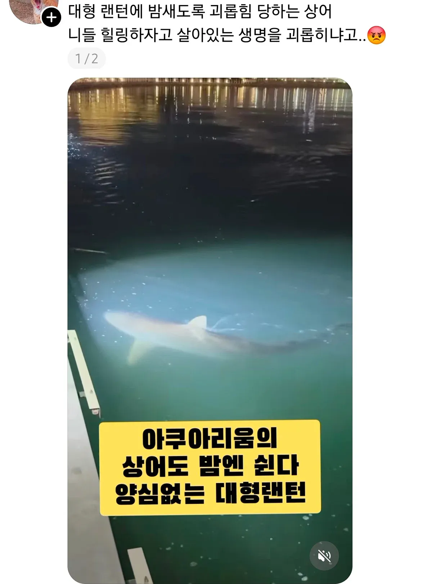
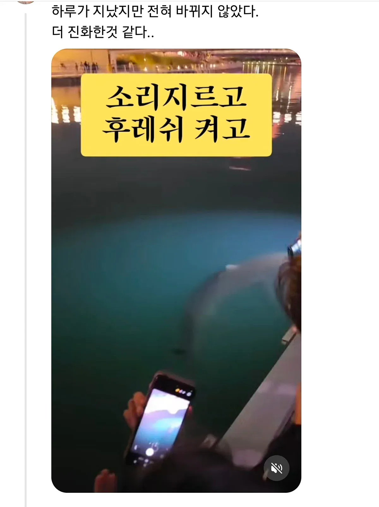
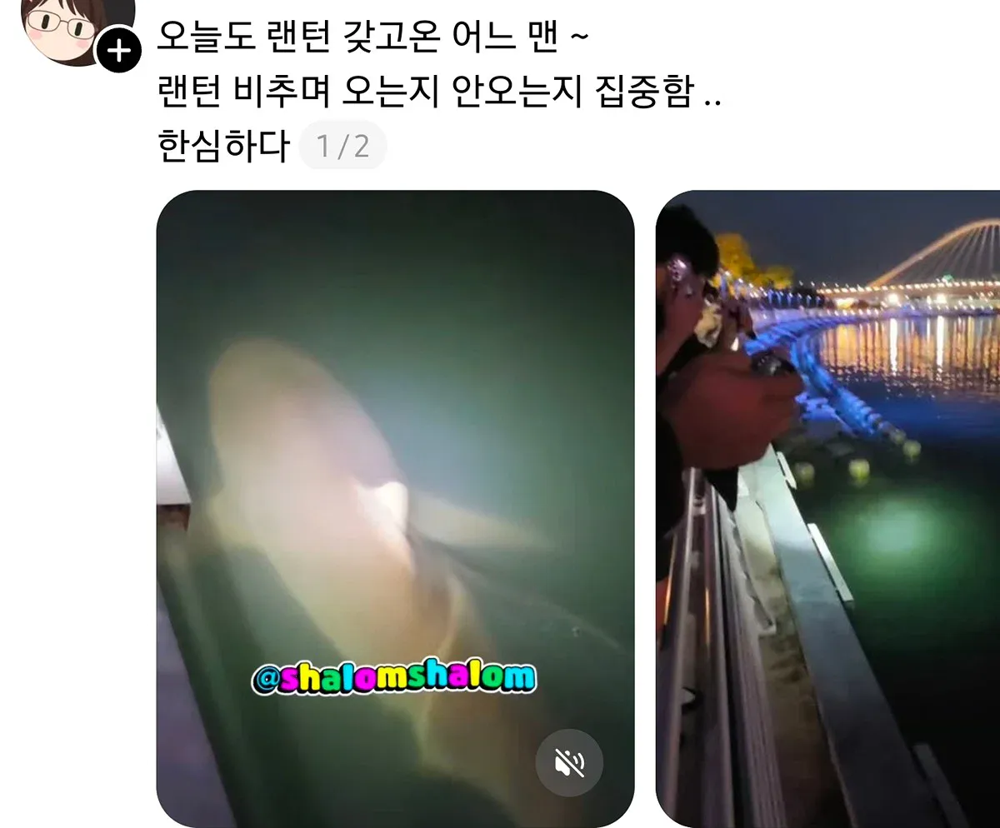
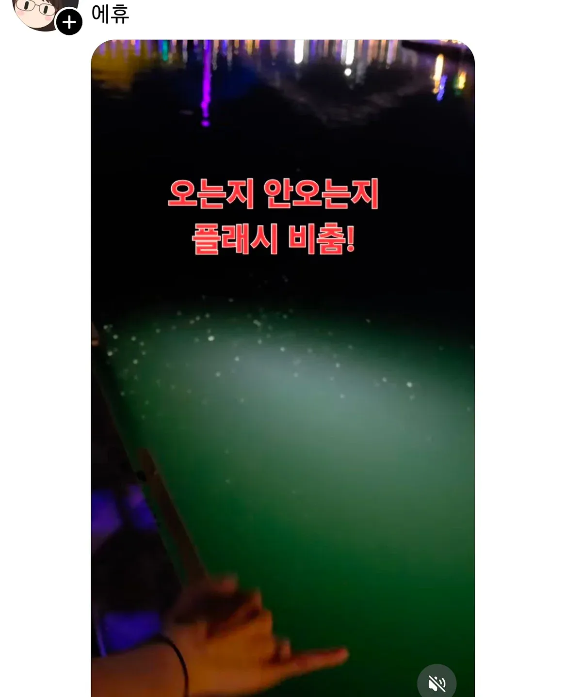

좆간들이 더 무슨 짓을 할지 모름




좆간들이 더 무슨 짓을 할지 모름
곧 폐사할듯
쳐나가라고 지가 안나가고 버티는데 폐사하면 자살이지
트랄라레로 트랄랄라 돼서 다 패버렸으면 좋겠다
저정도 체급의 상어한테 후레쉬 비춘다고 크게 문제 안생김
존나쌘 라이트로 며칠밤 내내 쏘는 수준 아니면 괜찮긴함
현직상어임?
아기상어 뚜루루룻 뚜루
아기상어 밝혀 엄청 뚜루루뚜루

밤에는 발리게이트 쳐서 막아야할듯